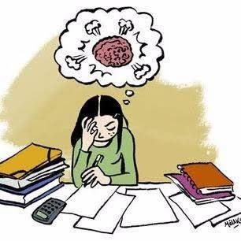
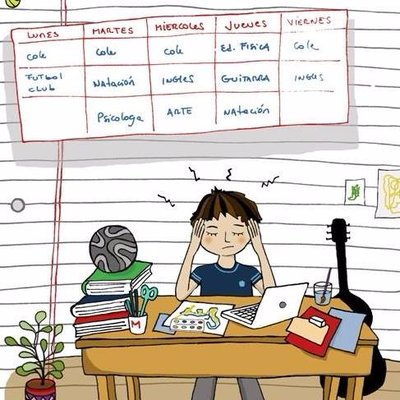
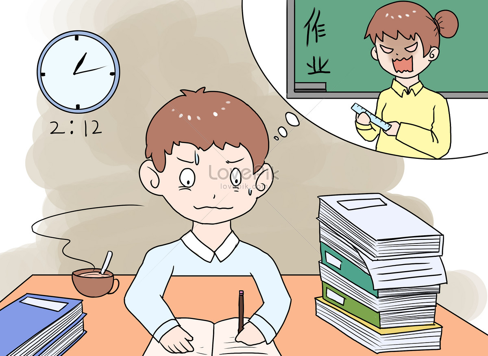

Bienvenido
"
El estres academico es una respuesta emocional y fisica provocada por las exigencias escolares. Aqui conoceras sus causas, efectos y como enfrentarlo de forma saludable.
Problemas causados por el Estres Academico
"
- Fatiga mental y fisica
- Bajo rendimiento escolar
- Ansiedad y depresion
- Aislamiento social
Tipos de Estres Academico

- Agudo: causado por eventos puntuales como examenes
- Cr�nico: se mantiene durante largos periodos
- Interno: autoexigencia y perfeccionismo
- Externo: presion de profesores o familiares
Soluciones

- Planifica tu tiempo con un horario realista
- Evita la multitarea excesiva
- Consulta con profesionales educativos
- Aplica tecnicas de estudio eficaces
Recomendaciones
- Duerme bien y manten una rutina estable
- Haz ejercicio regularmente
- Busca apoyo emocional en tu entorno
- Practica respiracion profunda o meditacion